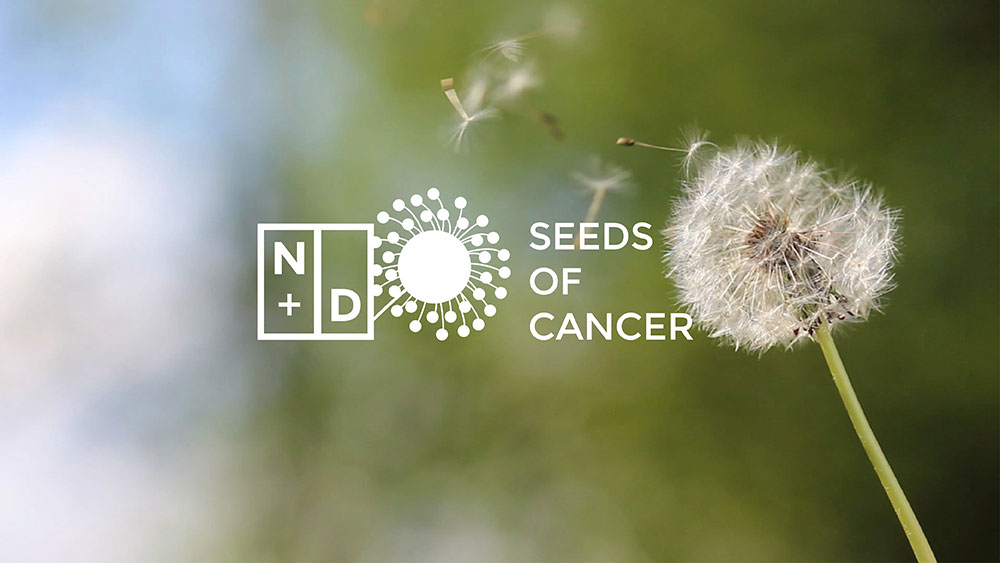

Narrative Drive is an award-winning collective of visual storytellers focused on telling the stories that matter. N+D builds experiences that change people and that bring audiences closer to the story using a wide spectrum of media, including photo, film, Augmented Reality, and other emerging mobile, participatory narrative installations.

I designed the logo and brand identity for the collective as an extension of their mission to connect people with stories. The design allows the logo to truly transform to each project, adding a personalized touch to every project. Just as the collective adapts a story to a medium, the identity shifts to express the story visually.

<div class="row">
	<hr>
	<div class="col-md-10 col-md-offset-1 col-xl-10 col-xl-offset-1">
		<a href="../assets/images/projects/narrative-drive/1.jpg" data-lightbox="narrative-drive">
		
		</a>
	</div>
	<div class="col-md-10 col-md-offset-1 col-xl-10 col-xl-offset-1">
		<a href="../assets/images/projects/narrative-drive/2.jpg" data-lightbox="narrative-drive">
		
		</a>
	</div>
	<div class="col-md-10 col-md-offset-1 col-xl-10 col-xl-offset-1">
		<a href="../assets/images/projects/narrative-drive/3.jpg" data-lightbox="narrative-drive">
		
		</a>
	</div>	
</div>